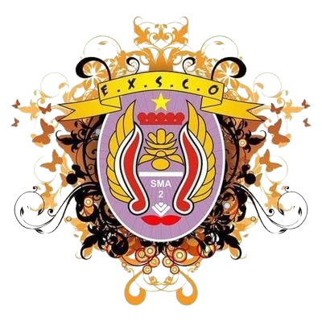

Organisasi-Organisasi

Dewan Upacara (DU)
Sekretaris. Mengelola administrasi organisasi.

Dewan Ambalan (DA) "Diponegoro & RA Kartini"
Bendahara. Mengurus keuangan dan anggaran organisasi.

PIK R Peraya
Bendahara. Mengurus keuangan dan anggaran organisasi.
Dewan Tonti (DT)
Bendahara. Mengurus keuangan dan anggaran organisasi.
Prapanca muda
Bendahara. Mengurus keuangan dan anggaran organisasi.
Patroli keamanan sekolah (PKS)
Bendahara. Mengurus keuangan dan anggaran organisasi.